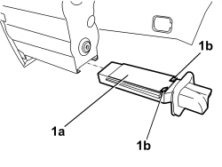

5010B49 TUNNEL CONSOLE GLOVE COMPARTMENT AIR DUCT - R. R.
- Path
- Procedures > 50 AUXILIARY UNITS > 5010 CLIMATE CONTROL - MISCELLANEOUS > 5010B CLIMATE CONTROL AIR PIPES AND DUCTS > 5010B49 TUNNEL CONSOLE GLOVE COMPARTMENT AIR DUCT - R. R.
- Kind
- repair procedure (removal / refitting; the operation number is the code)
- Applies to
- all engines; all production periods
- Interactive page
- https://sloeber94.github.io/elrnDB/alfa/159/en/#/939010891
Applies to: all engines; all production periods
 Removing
Removing
 Refitting
RefittingOp. 7040L33 ARMREST ON TUNNEL COVER WITH ODDMENTS COMPARTMENT - R.R.
Op. 7040L75 GLOVE COMPARTMENT ON REAR TUNNEL TRIM R. R.
1. Extract the duct (1a) releasing the retainers (1b).

Applies to: all engines; all production periods
Refitting
Removing- Check that the duct is not damaged.
- Position the duct and attach the retainers.
Op. 7040L75 GLOVE COMPARTMENT ON REAR TUNNEL TRIM R. R.
Op. 7040L33 ARMREST ON TUNNEL COVER WITH ODDMENTS COMPARTMENT - R.R.
Topics linked from this page (2)
- 7040L33 ARMREST ON TUNNEL COVER WITH ODDMENTS COMPARTMENT - R.R.
- 7040L75 GLOVE COMPARTMENT ON REAR TUNNEL TRIM R. R.